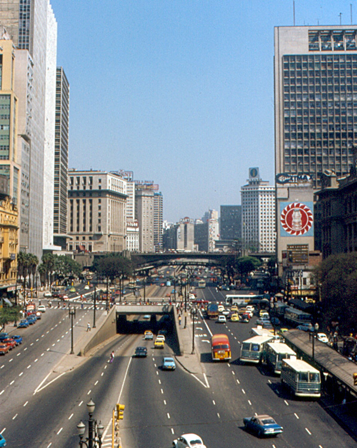

Vale do Anhangabaú em 1974, antes da reforma do início dos anos 1980, e antes da reforma atual, iniciada em 2019.
O edifício Wilson Mendes Caldeira chegou a ser um dos maiores da cidade de São Paulo. Ele foi implodido em 1975 para dar espaço à construção da estação da Sé.
Veja o vídeo abaixo (sem áudio):